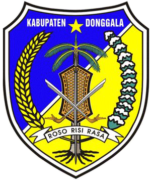

Platform informasi pengelolaan sampah terpadu Dinas Lingkungan Hidup Kabupaten Donggala — melayani pengaduan, jadwal pengangkutan, dan pemantauan kinerja persampahan secara real-time.
Data resmi berdasarkan estimasi koefisien timbulan sampah 0,5 kg/org/hari (Sumber: Kementerian LH / BPLH, Agustus 2025).
Jadwal layanan UPT Persampahan Kabonga Besar — Senin s/d Sabtu, 2 shift setiap hari.
Data layanan UPT Persampahan berdasarkan cakupan wilayah resmi. Total timbunan: 155,5 Ton/Hari.
Pilih kecamatan dan klik tombol untuk melihat data timbulan sampah.
Sebesar 74,74% sampah Kab. Donggala belum terkelola — risiko kesehatan masyarakat perlu diwaspadai.
Program unggulan DLH Kabupaten Donggala untuk meningkatkan pengelolaan sampah dari 25,26% menuju target nasional.
Data resmi berdasarkan Evaluasi UPTD dan Profil Pengelolaan Sampah Agustus 2025.
Data resmi armada dan fasilitas pengangkutan sampah — kepemilikan Pemda Kabupaten Donggala. Beroperasi Senin–Sabtu, pagi 06.00–08.00 & sore 16.00–18.00 WITA.
Isi form pengaduan — laporan otomatis dikirim langsung ke WhatsApp UPT Persampahan 085319323427 dan diproses dalam 1×24 jam kerja.
Masukkan nomor tiket yang diterima setelah mengirim pengaduan ke UPT Persampahan Kabonga Besar.